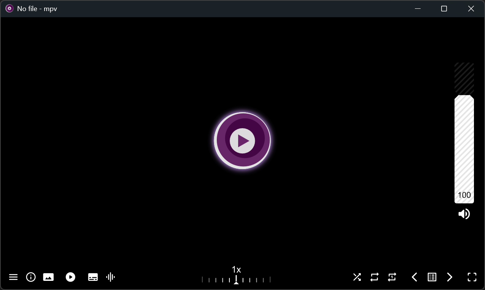

MPV¶

超分辨率 (Super Resolution)¶
补帧 (Frame Interpolation)¶
下面为配置过程的简化流程图:
graph TD
A["1. 安装 VapourSynth"]
--> B["2. 安装 VapourSynth 插件<br/>"]
--> C["3. 编写 VapourSynth 脚本 (vpy)"]
--> D["4. MPV 通过调用脚本实现滤镜"]- VapourSynth 是一个开源 (LGPL-2.1) 的视频处理框架. 此处用于对 MPV 的帧数据进行后处理.
- 在 Linux 下通常可以通过包管理器直接安装, 在 Windows 下需要将编译的 dll 文件移动到 VapourSynth 安装目录下的
vs-plugins文件夹中. - 通过 Python 脚本构建管线, 因此该脚本只需运行一次. 用户可以在此处进行各种高级的自定义, 但主要任务是调用安装的 VapourSynth 插件进行后处理.
- 在 MPV 的配置文件中引用该脚本, 以启用相应的功能.
主要有两种补帧技术:
MVTools¶
~~/scripts/mvtools.vpy
import vapoursynth as vs
clip = video_in
dst_fps = display_fps
# Interpolating to fps higher than 60 is too CPU-expensive, smoothmotion can handle the rest.
while (dst_fps > 60):
dst_fps /= 2
# Skip interpolation for >1080p or 60 Hz content due to performance
if not (clip.width > 1920 or clip.height > 1080 or container_fps > 59):
src_fps_num = int(container_fps * 1e8)
src_fps_den = int(1e8)
dst_fps_num = int(dst_fps * 1e4)
dst_fps_den = int(1e4)
# Needed because clip FPS is missing
clip = vs.core.std.AssumeFPS(clip, fpsnum = src_fps_num, fpsden = src_fps_den)
print("Reflowing from ",src_fps_num/src_fps_den," fps to ",dst_fps_num/dst_fps_den," fps.")
sup = vs.core.mv.Super(clip, pel=2, hpad=16, vpad=16)
bvec = vs.core.mv.Analyse(sup, blksize=16, isb=True , chroma=True, search=3, searchparam=1)
fvec = vs.core.mv.Analyse(sup, blksize=16, isb=False, chroma=True, search=3, searchparam=1)
clip = vs.core.mv.BlockFPS(clip, sup, bvec, fvec, num=dst_fps_num, den=dst_fps_den, mode=3, thscd2=12)
clip.set_output()
RIFE¶
模型:
python3 -c "import sys;sys.path.append('/usr/lib/vapoursynth');import vsmlrt;[print(f'{m.value:>4} = {m.name}') for m in vsmlrt.RIFEModel]"
后端:
python3 -c "import sys; sys.path.append('/usr/lib/vapoursynth'); import vsmlrt; print(*[b for b in dir(vsmlrt.Backend) if not b.startswith('_')], sep='\n')"
TensorRT¶
依赖于 TensorRT, 因此需要 20 或更新系列的 NVIDIA 显卡.
paru -S cuda
set -x PATH /opt/cuda/bin $PATH
set -x LD_LIBRARY_PATH /opt/cuda/lib64 $LD_LIBRARY_PATH
set -x CUDAToolkit_ROOT /opt/cuda
paru -S tensorrt
paru -S vapoursynth vapoursynth-plugin-mlrt-trt-runtime-git vapoursynth-plugin-mlrt-ext-models-rife
~~/scripts/rife.vpy
import vapoursynth as vs
from vapoursynth import core
import vsmlrt
clip = video_in
# 分辨率向上取整至 64 的倍数
# 若需向下取整, 改为 (clip.width // 64) * 64
pad_w = ((clip.width + 63) // 64) * 64
pad_h = ((clip.height + 63) // 64) * 64
# 调整分辨率并转换为 RIFE 所需的 RGBS 格式
clip = core.resize.Bicubic(
clip,
width=pad_w,
height=pad_h,
format=vs.RGBS,
matrix_in_s="709"
)
# 配置 TensorRT 后端
trt_backend = vsmlrt.Backend.TRT(
device_id=0, # 显卡序号 (GPU Index), 0 为第一张显卡
workspace=None, # 显存 (VRAM) 分配大小, None 为自动分配
num_streams=2, # CUDA 流并发数 (Number of Streams)
max_aux_streams=2, # 最大辅助流数 (Max Auxiliary Streams)
fp16=True, # 启用半精度浮点 (FP16) 加速 (提升性能但轻微降质)
force_fp16=True, # 强制使用 FP16 精度
use_cuda_graph=True # 启用 CUDA 图降低运行开销
# use_cublas=True, # 优化矩阵运算
# use_cudnn=True, # 优化卷积神经网络
# use_edge_mask_convolutions=True, # 减少模糊重影 (会降低性能)
# use_jit_convolutions=True, # 即时编译卷积 (增加编译时间, 提升运行性能)
# static_shape=True, # 静态形状 (增加编译时间, 提升运行性能)
# heuristic=True, # TRT 自动选择最佳算法
# short_path=True, # 短路径优化 (减少重复计算)
# builder_optimization_level=5, # 构建器优化等级 (0~5)
# tiling_optimization_level=2 # 平铺优化等级 (0~2)
)
# 运行 RIFE 模型
clip = vsmlrt.RIFE(
clip,
model=46, # 模型版本
multi=2, # 补帧倍速
backend=trt_backend
)
# 恢复为常规的 YUV420P10 格式输出
clip = core.resize.Bicubic(
clip,
format=vs.YUV420P10,
matrix_s="709"
)
clip.set_output()
NCNN Vulkan¶
Warning
未测试该后端, 下面内容仅供参考.
基于由腾讯开发的 ncnn, 依赖于 Vulkan, 因此兼容性较好.
~/.config/mpv/scripts/
import vapoursynth as vs
from vapoursynth import core
import vsmlrt
clip = video_in
# 分辨率向上取整至 64 的倍数
# 若需向下取整, 改为 (clip.width // 64) * 64
pad_w = ((clip.width + 63) // 64) * 64
pad_h = ((clip.height + 63) // 64) * 64
# 调整分辨率并转换为 RIFE 所需的 RGBS 格式
clip = core.resize.Bicubic(
clip,
width=pad_w,
height=pad_h,
format=vs.RGBS,
matrix_in_s="709"
)
# 配置 NCNN Vulkan 后端
ncnn_backend = vsmlrt.Backend.NCNN_VK(
device_id=0, # 显卡序号 (GPU Index), 0 为第一张显卡
num_streams=1, # 并行流处理数量 (Number of Streams), 范围 1~8
fp16=True, # 启用半精度浮点 (FP16) 加速
tiles=None, # 分块处理的大小 (Tile Size), None 为自动分配
overlap=None # 分块边缘重叠像素的大小 (Overlap Size), None 为自动分配
)
# 运行 RIFE 模型
clip = vsmlrt.RIFE(
clip,
model=46, # 模型版本
multi=2, # 补帧倍速
backend=ncnn_backend
)
# 恢复为常规的 YUV420P10 视频流格式输出
clip = core.resize.Bicubic(
clip,
format=vs.YUV420P10,
matrix_s="709"
)
clip.set_output()
参见¶
- mpv_PlayKit: Windows 下开箱即用的高级 mpv 配置.